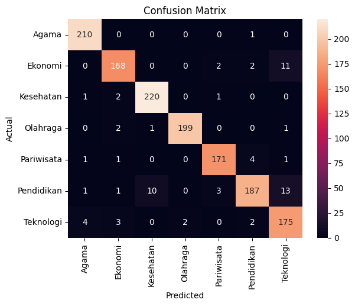

FINAL PROJECT TEXT MINING KELOMPOK 7
Achmad Baharuddin Akbar (210411100001)
M Iqbal Surya Ramadhan (210411100002)
Arif Hidayatullah (210411100012)
Ainur Rifqi (210411100236)
#1. Data Collecting
from google.colab import files
uploaded = files.upload()
---------------------------------------------------------------------------
KeyboardInterrupt Traceback (most recent call last)
<ipython-input-1-21dc3c638f66> in <cell line: 2>()
1 from google.colab import files
----> 2 uploaded = files.upload()
/usr/local/lib/python3.10/dist-packages/google/colab/files.py in upload()
67 """
68
---> 69 uploaded_files = _upload_files(multiple=True)
70 # Mapping from original filename to filename as saved locally.
71 local_filenames = dict()
/usr/local/lib/python3.10/dist-packages/google/colab/files.py in _upload_files(multiple)
154
155 # First result is always an indication that the file picker has completed.
--> 156 result = _output.eval_js(
157 'google.colab._files._uploadFiles("{input_id}", "{output_id}")'.format(
158 input_id=input_id, output_id=output_id
/usr/local/lib/python3.10/dist-packages/google/colab/output/_js.py in eval_js(script, ignore_result, timeout_sec)
38 if ignore_result:
39 return
---> 40 return _message.read_reply_from_input(request_id, timeout_sec)
41
42
/usr/local/lib/python3.10/dist-packages/google/colab/_message.py in read_reply_from_input(message_id, timeout_sec)
94 reply = _read_next_input_message()
95 if reply == _NOT_READY or not isinstance(reply, dict):
---> 96 time.sleep(0.025)
97 continue
98 if (
KeyboardInterrupt:
import pandas as pd
import io
df_berita = pd.read_csv(io.BytesIO(uploaded['data_berita_detik.csv']))
df_berita
| judul | tanggal | isi | url | kategori | |
|---|---|---|---|---|---|
| 0 | ASEAN University Games 2024: Judo RI Juara Umu... | Minggu, 30 Jun 2024 10:15 WIB | Jakarta - Predikat juara umum berhasil diraih ... | https://sport.detik.com/sport-lain/d-7415608/a... | Olahraga |
| 1 | Jatuh Bertubi-tubi di MotoGP Belanda, Marquez ... | Minggu, 30 Jun 2024 09:15 WIB | Assen - Marc Marquez jatuh bertubi-tubi di Mot... | https://sport.detik.com/moto-gp/d-7415473/jatu... | Olahraga |
| 2 | Kisah Greysia Polii Motivasi Anthony Ginting L... | Minggu, 30 Jun 2024 08:15 WIB | Jakarta - Anthony Sinisuka Ginting menjadi sal... | https://sport.detik.com/raket/d-7415464/kisah-... | Olahraga |
| 3 | Jorge Martin Kena Penalti, Turun 3 Grid di Mot... | Minggu, 30 Jun 2024 07:45 WIB | Assen - Jorge Martin mendapat kabar buruk jela... | https://sport.detik.com/moto-gp/d-7415472/jorg... | Olahraga |
| 4 | Buku Menembus Garis Batas di Mata Apriyani Rah... | Minggu, 30 Jun 2024 07:15 WIB | Jakarta - Apriyani Rahayu mengapresiasi pelunc... | https://sport.detik.com/raket/d-7415463/buku-m... | Olahraga |
| ... | ... | ... | ... | ... | ... |
| 6995 | 5 Arti WhatsApp Centang Satu, Belum Tentu Kare... | Rabu, 05 Jun 2024 13:02 WIB | Jakarta - Ketika mengirimkan pesan WhatsApp, k... | https://inet.detik.com/mobile-apps/d-7375090/5... | Teknologi |
| 6996 | Title Not Found | Date Not Found | Content Not Found | https://20.detik.com/detikupdate/20240605-2406... | Teknologi |
| 6997 | Terancam Starlink, Operator Seluler Gantungkan... | 11,317 Views | Rabu, 05 Jun 2024 11:58 WIB | Beroperasinya Starlink di Indonesia menimbulka... | https://20.detik.com/detikupdate/20240605-2406... | Teknologi |
| 6998 | Starlink Sasar Pelosok RI, Ancaman Satria-1 da... | Rabu, 05 Jun 2024 12:29 WIB | Jakarta - Dengan keunggulan Starlink yang bera... | https://inet.detik.com/law-and-policy/d-737503... | Teknologi |
| 6999 | Pria Ini Raup Bitcoin Rp 48 M Setelah Lupa Pas... | Rabu, 05 Jun 2024 12:00 WIB | Jakarta - Seorang pria berhasil mengamankan Bi... | https://inet.detik.com/cyberlife/d-7374998/pri... | Teknologi |
7000 rows × 5 columns
#2. Data Preprocessing
##2.1 Transformasi Data Kategorik
import pandas as pd
from sklearn.preprocessing import LabelEncoder
df_berita = pd.DataFrame(df_berita)
# Transformasi data kategorik
label_encoder = LabelEncoder()
df_berita['kategori_encoded'] = label_encoder.fit_transform(df_berita['kategori'])
# Menampilkan nilai sebelum dan sesudah konversi
kategori_mapping = dict(zip(label_encoder.classes_, label_encoder.transform(label_encoder.classes_)))
print("\nNilai sebelum dan sesudah konversi:")
print(kategori_mapping)
# Menampilkan DataFrame
df_berita
Nilai sebelum dan sesudah konversi:
{'Agama': 0, 'Ekonomi': 1, 'Kesehatan': 2, 'Olahraga': 3, 'Pariwisata': 4, 'Pendidikan': 5, 'Teknologi': 6}
| judul | tanggal | isi | url | kategori | kategori_encoded | |
|---|---|---|---|---|---|---|
| 0 | ASEAN University Games 2024: Judo RI Juara Umu... | Minggu, 30 Jun 2024 10:15 WIB | Jakarta - Predikat juara umum berhasil diraih ... | https://sport.detik.com/sport-lain/d-7415608/a... | Olahraga | 3 |
| 1 | Jatuh Bertubi-tubi di MotoGP Belanda, Marquez ... | Minggu, 30 Jun 2024 09:15 WIB | Assen - Marc Marquez jatuh bertubi-tubi di Mot... | https://sport.detik.com/moto-gp/d-7415473/jatu... | Olahraga | 3 |
| 2 | Kisah Greysia Polii Motivasi Anthony Ginting L... | Minggu, 30 Jun 2024 08:15 WIB | Jakarta - Anthony Sinisuka Ginting menjadi sal... | https://sport.detik.com/raket/d-7415464/kisah-... | Olahraga | 3 |
| 3 | Jorge Martin Kena Penalti, Turun 3 Grid di Mot... | Minggu, 30 Jun 2024 07:45 WIB | Assen - Jorge Martin mendapat kabar buruk jela... | https://sport.detik.com/moto-gp/d-7415472/jorg... | Olahraga | 3 |
| 4 | Buku Menembus Garis Batas di Mata Apriyani Rah... | Minggu, 30 Jun 2024 07:15 WIB | Jakarta - Apriyani Rahayu mengapresiasi pelunc... | https://sport.detik.com/raket/d-7415463/buku-m... | Olahraga | 3 |
| ... | ... | ... | ... | ... | ... | ... |
| 6995 | 5 Arti WhatsApp Centang Satu, Belum Tentu Kare... | Rabu, 05 Jun 2024 13:02 WIB | Jakarta - Ketika mengirimkan pesan WhatsApp, k... | https://inet.detik.com/mobile-apps/d-7375090/5... | Teknologi | 6 |
| 6996 | Title Not Found | Date Not Found | Content Not Found | https://20.detik.com/detikupdate/20240605-2406... | Teknologi | 6 |
| 6997 | Terancam Starlink, Operator Seluler Gantungkan... | 11,317 Views | Rabu, 05 Jun 2024 11:58 WIB | Beroperasinya Starlink di Indonesia menimbulka... | https://20.detik.com/detikupdate/20240605-2406... | Teknologi | 6 |
| 6998 | Starlink Sasar Pelosok RI, Ancaman Satria-1 da... | Rabu, 05 Jun 2024 12:29 WIB | Jakarta - Dengan keunggulan Starlink yang bera... | https://inet.detik.com/law-and-policy/d-737503... | Teknologi | 6 |
| 6999 | Pria Ini Raup Bitcoin Rp 48 M Setelah Lupa Pas... | Rabu, 05 Jun 2024 12:00 WIB | Jakarta - Seorang pria berhasil mengamankan Bi... | https://inet.detik.com/cyberlife/d-7374998/pri... | Teknologi | 6 |
7000 rows × 6 columns
##2.2 Case Folding
df_casefold = df_berita.copy()
# Case Folding (Lowercase)
df_casefold['text_lower'] = df_casefold['isi'].str.lower()
df_casefold.head()
| judul | tanggal | isi | url | kategori | kategori_encoded | text_lower | |
|---|---|---|---|---|---|---|---|
| 0 | ASEAN University Games 2024: Judo RI Juara Umu... | Minggu, 30 Jun 2024 10:15 WIB | Jakarta - Predikat juara umum berhasil diraih ... | https://sport.detik.com/sport-lain/d-7415608/a... | Olahraga | 3 | jakarta - predikat juara umum berhasil diraih ... |
| 1 | Jatuh Bertubi-tubi di MotoGP Belanda, Marquez ... | Minggu, 30 Jun 2024 09:15 WIB | Assen - Marc Marquez jatuh bertubi-tubi di Mot... | https://sport.detik.com/moto-gp/d-7415473/jatu... | Olahraga | 3 | assen - marc marquez jatuh bertubi-tubi di mot... |
| 2 | Kisah Greysia Polii Motivasi Anthony Ginting L... | Minggu, 30 Jun 2024 08:15 WIB | Jakarta - Anthony Sinisuka Ginting menjadi sal... | https://sport.detik.com/raket/d-7415464/kisah-... | Olahraga | 3 | jakarta - anthony sinisuka ginting menjadi sal... |
| 3 | Jorge Martin Kena Penalti, Turun 3 Grid di Mot... | Minggu, 30 Jun 2024 07:45 WIB | Assen - Jorge Martin mendapat kabar buruk jela... | https://sport.detik.com/moto-gp/d-7415472/jorg... | Olahraga | 3 | assen - jorge martin mendapat kabar buruk jela... |
| 4 | Buku Menembus Garis Batas di Mata Apriyani Rah... | Minggu, 30 Jun 2024 07:15 WIB | Jakarta - Apriyani Rahayu mengapresiasi pelunc... | https://sport.detik.com/raket/d-7415463/buku-m... | Olahraga | 3 | jakarta - apriyani rahayu mengapresiasi pelunc... |
##2.2 Text Cleaning & Tokenizing
import pandas as pd
import re
from nltk.tokenize import RegexpTokenizer
def clean_tweet_text(df, text_column):
df_cleaned = df.copy()
# Menghapus URL
df_cleaned['text_no_url'] = df_cleaned[text_column].apply(lambda x: re.sub(r'http\S+|www\S+|https\S+', '', x, flags=re.MULTILINE))
# Menghapus mentions (@username)
df_cleaned['text_no_mentions'] = df_cleaned['text_no_url'].apply(lambda x: re.sub(r'@\w+', '', x))
# Menghapus hashtag
df_cleaned['text_no_hashtags'] = df_cleaned['text_no_mentions'].apply(lambda x: re.sub(r'#\w+', '', x))
# Menghapus angka
df_cleaned['text_no_numbers'] = df_cleaned['text_no_hashtags'].apply(lambda x: re.sub(r'\d+', '', x))
# Menghapus tanda baca dan tokenisasi
tokenizer = RegexpTokenizer(r'\w+') # Hanya mengambil alphanumeric characters
df_cleaned['text_token'] = df_cleaned['text_no_numbers'].apply(tokenizer.tokenize)
return df_cleaned['text_token']
df_token = df_casefold.copy()
df_token['text_token'] = clean_tweet_text(df_casefold, 'text_lower')
df_token.head()
| judul | tanggal | isi | url | kategori | kategori_encoded | text_lower | text_token | |
|---|---|---|---|---|---|---|---|---|
| 0 | ASEAN University Games 2024: Judo RI Juara Umu... | Minggu, 30 Jun 2024 10:15 WIB | Jakarta - Predikat juara umum berhasil diraih ... | https://sport.detik.com/sport-lain/d-7415608/a... | Olahraga | 3 | jakarta - predikat juara umum berhasil diraih ... | [jakarta, predikat, juara, umum, berhasil, dir... |
| 1 | Jatuh Bertubi-tubi di MotoGP Belanda, Marquez ... | Minggu, 30 Jun 2024 09:15 WIB | Assen - Marc Marquez jatuh bertubi-tubi di Mot... | https://sport.detik.com/moto-gp/d-7415473/jatu... | Olahraga | 3 | assen - marc marquez jatuh bertubi-tubi di mot... | [assen, marc, marquez, jatuh, bertubi, tubi, d... |
| 2 | Kisah Greysia Polii Motivasi Anthony Ginting L... | Minggu, 30 Jun 2024 08:15 WIB | Jakarta - Anthony Sinisuka Ginting menjadi sal... | https://sport.detik.com/raket/d-7415464/kisah-... | Olahraga | 3 | jakarta - anthony sinisuka ginting menjadi sal... | [jakarta, anthony, sinisuka, ginting, menjadi,... |
| 3 | Jorge Martin Kena Penalti, Turun 3 Grid di Mot... | Minggu, 30 Jun 2024 07:45 WIB | Assen - Jorge Martin mendapat kabar buruk jela... | https://sport.detik.com/moto-gp/d-7415472/jorg... | Olahraga | 3 | assen - jorge martin mendapat kabar buruk jela... | [assen, jorge, martin, mendapat, kabar, buruk,... |
| 4 | Buku Menembus Garis Batas di Mata Apriyani Rah... | Minggu, 30 Jun 2024 07:15 WIB | Jakarta - Apriyani Rahayu mengapresiasi pelunc... | https://sport.detik.com/raket/d-7415463/buku-m... | Olahraga | 3 | jakarta - apriyani rahayu mengapresiasi pelunc... | [jakarta, apriyani, rahayu, mengapresiasi, pel... |
##2.3 Stopwords Removal
import nltk
nltk.download('stopwords')
nltk.download('punkt')
nltk.download('wordnet')
[nltk_data] Downloading package stopwords to /root/nltk_data...
[nltk_data] Unzipping corpora/stopwords.zip.
[nltk_data] Downloading package punkt to /root/nltk_data...
[nltk_data] Unzipping tokenizers/punkt.zip.
[nltk_data] Downloading package wordnet to /root/nltk_data...
True
from nltk.corpus import stopwords
print(stopwords.words('indonesian'))
print(len(stopwords.words('indonesian')))
['ada', 'adalah', 'adanya', 'adapun', 'agak', 'agaknya', 'agar', 'akan', 'akankah', 'akhir', 'akhiri', 'akhirnya', 'aku', 'akulah', 'amat', 'amatlah', 'anda', 'andalah', 'antar', 'antara', 'antaranya', 'apa', 'apaan', 'apabila', 'apakah', 'apalagi', 'apatah', 'artinya', 'asal', 'asalkan', 'atas', 'atau', 'ataukah', 'ataupun', 'awal', 'awalnya', 'bagai', 'bagaikan', 'bagaimana', 'bagaimanakah', 'bagaimanapun', 'bagi', 'bagian', 'bahkan', 'bahwa', 'bahwasanya', 'baik', 'bakal', 'bakalan', 'balik', 'banyak', 'bapak', 'baru', 'bawah', 'beberapa', 'begini', 'beginian', 'beginikah', 'beginilah', 'begitu', 'begitukah', 'begitulah', 'begitupun', 'bekerja', 'belakang', 'belakangan', 'belum', 'belumlah', 'benar', 'benarkah', 'benarlah', 'berada', 'berakhir', 'berakhirlah', 'berakhirnya', 'berapa', 'berapakah', 'berapalah', 'berapapun', 'berarti', 'berawal', 'berbagai', 'berdatangan', 'beri', 'berikan', 'berikut', 'berikutnya', 'berjumlah', 'berkali-kali', 'berkata', 'berkehendak', 'berkeinginan', 'berkenaan', 'berlainan', 'berlalu', 'berlangsung', 'berlebihan', 'bermacam', 'bermacam-macam', 'bermaksud', 'bermula', 'bersama', 'bersama-sama', 'bersiap', 'bersiap-siap', 'bertanya', 'bertanya-tanya', 'berturut', 'berturut-turut', 'bertutur', 'berujar', 'berupa', 'besar', 'betul', 'betulkah', 'biasa', 'biasanya', 'bila', 'bilakah', 'bisa', 'bisakah', 'boleh', 'bolehkah', 'bolehlah', 'buat', 'bukan', 'bukankah', 'bukanlah', 'bukannya', 'bulan', 'bung', 'cara', 'caranya', 'cukup', 'cukupkah', 'cukuplah', 'cuma', 'dahulu', 'dalam', 'dan', 'dapat', 'dari', 'daripada', 'datang', 'dekat', 'demi', 'demikian', 'demikianlah', 'dengan', 'depan', 'di', 'dia', 'diakhiri', 'diakhirinya', 'dialah', 'diantara', 'diantaranya', 'diberi', 'diberikan', 'diberikannya', 'dibuat', 'dibuatnya', 'didapat', 'didatangkan', 'digunakan', 'diibaratkan', 'diibaratkannya', 'diingat', 'diingatkan', 'diinginkan', 'dijawab', 'dijelaskan', 'dijelaskannya', 'dikarenakan', 'dikatakan', 'dikatakannya', 'dikerjakan', 'diketahui', 'diketahuinya', 'dikira', 'dilakukan', 'dilalui', 'dilihat', 'dimaksud', 'dimaksudkan', 'dimaksudkannya', 'dimaksudnya', 'diminta', 'dimintai', 'dimisalkan', 'dimulai', 'dimulailah', 'dimulainya', 'dimungkinkan', 'dini', 'dipastikan', 'diperbuat', 'diperbuatnya', 'dipergunakan', 'diperkirakan', 'diperlihatkan', 'diperlukan', 'diperlukannya', 'dipersoalkan', 'dipertanyakan', 'dipunyai', 'diri', 'dirinya', 'disampaikan', 'disebut', 'disebutkan', 'disebutkannya', 'disini', 'disinilah', 'ditambahkan', 'ditandaskan', 'ditanya', 'ditanyai', 'ditanyakan', 'ditegaskan', 'ditujukan', 'ditunjuk', 'ditunjuki', 'ditunjukkan', 'ditunjukkannya', 'ditunjuknya', 'dituturkan', 'dituturkannya', 'diucapkan', 'diucapkannya', 'diungkapkan', 'dong', 'dua', 'dulu', 'empat', 'enggak', 'enggaknya', 'entah', 'entahlah', 'guna', 'gunakan', 'hal', 'hampir', 'hanya', 'hanyalah', 'hari', 'harus', 'haruslah', 'harusnya', 'hendak', 'hendaklah', 'hendaknya', 'hingga', 'ia', 'ialah', 'ibarat', 'ibaratkan', 'ibaratnya', 'ibu', 'ikut', 'ingat', 'ingat-ingat', 'ingin', 'inginkah', 'inginkan', 'ini', 'inikah', 'inilah', 'itu', 'itukah', 'itulah', 'jadi', 'jadilah', 'jadinya', 'jangan', 'jangankan', 'janganlah', 'jauh', 'jawab', 'jawaban', 'jawabnya', 'jelas', 'jelaskan', 'jelaslah', 'jelasnya', 'jika', 'jikalau', 'juga', 'jumlah', 'jumlahnya', 'justru', 'kala', 'kalau', 'kalaulah', 'kalaupun', 'kalian', 'kami', 'kamilah', 'kamu', 'kamulah', 'kan', 'kapan', 'kapankah', 'kapanpun', 'karena', 'karenanya', 'kasus', 'kata', 'katakan', 'katakanlah', 'katanya', 'ke', 'keadaan', 'kebetulan', 'kecil', 'kedua', 'keduanya', 'keinginan', 'kelamaan', 'kelihatan', 'kelihatannya', 'kelima', 'keluar', 'kembali', 'kemudian', 'kemungkinan', 'kemungkinannya', 'kenapa', 'kepada', 'kepadanya', 'kesampaian', 'keseluruhan', 'keseluruhannya', 'keterlaluan', 'ketika', 'khususnya', 'kini', 'kinilah', 'kira', 'kira-kira', 'kiranya', 'kita', 'kitalah', 'kok', 'kurang', 'lagi', 'lagian', 'lah', 'lain', 'lainnya', 'lalu', 'lama', 'lamanya', 'lanjut', 'lanjutnya', 'lebih', 'lewat', 'lima', 'luar', 'macam', 'maka', 'makanya', 'makin', 'malah', 'malahan', 'mampu', 'mampukah', 'mana', 'manakala', 'manalagi', 'masa', 'masalah', 'masalahnya', 'masih', 'masihkah', 'masing', 'masing-masing', 'mau', 'maupun', 'melainkan', 'melakukan', 'melalui', 'melihat', 'melihatnya', 'memang', 'memastikan', 'memberi', 'memberikan', 'membuat', 'memerlukan', 'memihak', 'meminta', 'memintakan', 'memisalkan', 'memperbuat', 'mempergunakan', 'memperkirakan', 'memperlihatkan', 'mempersiapkan', 'mempersoalkan', 'mempertanyakan', 'mempunyai', 'memulai', 'memungkinkan', 'menaiki', 'menambahkan', 'menandaskan', 'menanti', 'menanti-nanti', 'menantikan', 'menanya', 'menanyai', 'menanyakan', 'mendapat', 'mendapatkan', 'mendatang', 'mendatangi', 'mendatangkan', 'menegaskan', 'mengakhiri', 'mengapa', 'mengatakan', 'mengatakannya', 'mengenai', 'mengerjakan', 'mengetahui', 'menggunakan', 'menghendaki', 'mengibaratkan', 'mengibaratkannya', 'mengingat', 'mengingatkan', 'menginginkan', 'mengira', 'mengucapkan', 'mengucapkannya', 'mengungkapkan', 'menjadi', 'menjawab', 'menjelaskan', 'menuju', 'menunjuk', 'menunjuki', 'menunjukkan', 'menunjuknya', 'menurut', 'menuturkan', 'menyampaikan', 'menyangkut', 'menyatakan', 'menyebutkan', 'menyeluruh', 'menyiapkan', 'merasa', 'mereka', 'merekalah', 'merupakan', 'meski', 'meskipun', 'meyakini', 'meyakinkan', 'minta', 'mirip', 'misal', 'misalkan', 'misalnya', 'mula', 'mulai', 'mulailah', 'mulanya', 'mungkin', 'mungkinkah', 'nah', 'naik', 'namun', 'nanti', 'nantinya', 'nyaris', 'nyatanya', 'oleh', 'olehnya', 'pada', 'padahal', 'padanya', 'pak', 'paling', 'panjang', 'pantas', 'para', 'pasti', 'pastilah', 'penting', 'pentingnya', 'per', 'percuma', 'perlu', 'perlukah', 'perlunya', 'pernah', 'persoalan', 'pertama', 'pertama-tama', 'pertanyaan', 'pertanyakan', 'pihak', 'pihaknya', 'pukul', 'pula', 'pun', 'punya', 'rasa', 'rasanya', 'rata', 'rupanya', 'saat', 'saatnya', 'saja', 'sajalah', 'saling', 'sama', 'sama-sama', 'sambil', 'sampai', 'sampai-sampai', 'sampaikan', 'sana', 'sangat', 'sangatlah', 'satu', 'saya', 'sayalah', 'se', 'sebab', 'sebabnya', 'sebagai', 'sebagaimana', 'sebagainya', 'sebagian', 'sebaik', 'sebaik-baiknya', 'sebaiknya', 'sebaliknya', 'sebanyak', 'sebegini', 'sebegitu', 'sebelum', 'sebelumnya', 'sebenarnya', 'seberapa', 'sebesar', 'sebetulnya', 'sebisanya', 'sebuah', 'sebut', 'sebutlah', 'sebutnya', 'secara', 'secukupnya', 'sedang', 'sedangkan', 'sedemikian', 'sedikit', 'sedikitnya', 'seenaknya', 'segala', 'segalanya', 'segera', 'seharusnya', 'sehingga', 'seingat', 'sejak', 'sejauh', 'sejenak', 'sejumlah', 'sekadar', 'sekadarnya', 'sekali', 'sekali-kali', 'sekalian', 'sekaligus', 'sekalipun', 'sekarang', 'sekarang', 'sekecil', 'seketika', 'sekiranya', 'sekitar', 'sekitarnya', 'sekurang-kurangnya', 'sekurangnya', 'sela', 'selain', 'selaku', 'selalu', 'selama', 'selama-lamanya', 'selamanya', 'selanjutnya', 'seluruh', 'seluruhnya', 'semacam', 'semakin', 'semampu', 'semampunya', 'semasa', 'semasih', 'semata', 'semata-mata', 'semaunya', 'sementara', 'semisal', 'semisalnya', 'sempat', 'semua', 'semuanya', 'semula', 'sendiri', 'sendirian', 'sendirinya', 'seolah', 'seolah-olah', 'seorang', 'sepanjang', 'sepantasnya', 'sepantasnyalah', 'seperlunya', 'seperti', 'sepertinya', 'sepihak', 'sering', 'seringnya', 'serta', 'serupa', 'sesaat', 'sesama', 'sesampai', 'sesegera', 'sesekali', 'seseorang', 'sesuatu', 'sesuatunya', 'sesudah', 'sesudahnya', 'setelah', 'setempat', 'setengah', 'seterusnya', 'setiap', 'setiba', 'setibanya', 'setidak-tidaknya', 'setidaknya', 'setinggi', 'seusai', 'sewaktu', 'siap', 'siapa', 'siapakah', 'siapapun', 'sini', 'sinilah', 'soal', 'soalnya', 'suatu', 'sudah', 'sudahkah', 'sudahlah', 'supaya', 'tadi', 'tadinya', 'tahu', 'tahun', 'tak', 'tambah', 'tambahnya', 'tampak', 'tampaknya', 'tandas', 'tandasnya', 'tanpa', 'tanya', 'tanyakan', 'tanyanya', 'tapi', 'tegas', 'tegasnya', 'telah', 'tempat', 'tengah', 'tentang', 'tentu', 'tentulah', 'tentunya', 'tepat', 'terakhir', 'terasa', 'terbanyak', 'terdahulu', 'terdapat', 'terdiri', 'terhadap', 'terhadapnya', 'teringat', 'teringat-ingat', 'terjadi', 'terjadilah', 'terjadinya', 'terkira', 'terlalu', 'terlebih', 'terlihat', 'termasuk', 'ternyata', 'tersampaikan', 'tersebut', 'tersebutlah', 'tertentu', 'tertuju', 'terus', 'terutama', 'tetap', 'tetapi', 'tiap', 'tiba', 'tiba-tiba', 'tidak', 'tidakkah', 'tidaklah', 'tiga', 'tinggi', 'toh', 'tunjuk', 'turut', 'tutur', 'tuturnya', 'ucap', 'ucapnya', 'ujar', 'ujarnya', 'umum', 'umumnya', 'ungkap', 'ungkapnya', 'untuk', 'usah', 'usai', 'waduh', 'wah', 'wahai', 'waktu', 'waktunya', 'walau', 'walaupun', 'wong', 'yaitu', 'yakin', 'yakni', 'yang']
758
stop_words = stopwords.words('indonesian')
stop_words.extend(['scroll', 'to', 'continue', 'with', 'advertisement', 'content'])
stop_words = set(stop_words)
# Stopwords Removal
def sw_remove(words):
filtered_sentence = []
for w in words:
if w not in stop_words:
filtered_sentence.append(w)
return filtered_sentence
df_sword = df_token.copy()
df_sword['text_swremove'] = df_sword['text_token'].apply(sw_remove)
df_sword.head()
| judul | tanggal | isi | url | kategori | kategori_encoded | text_lower | text_token | text_swremove | |
|---|---|---|---|---|---|---|---|---|---|
| 0 | ASEAN University Games 2024: Judo RI Juara Umu... | Minggu, 30 Jun 2024 10:15 WIB | Jakarta - Predikat juara umum berhasil diraih ... | https://sport.detik.com/sport-lain/d-7415608/a... | Olahraga | 3 | jakarta - predikat juara umum berhasil diraih ... | [jakarta, predikat, juara, umum, berhasil, dir... | [jakarta, predikat, juara, berhasil, diraih, t... |
| 1 | Jatuh Bertubi-tubi di MotoGP Belanda, Marquez ... | Minggu, 30 Jun 2024 09:15 WIB | Assen - Marc Marquez jatuh bertubi-tubi di Mot... | https://sport.detik.com/moto-gp/d-7415473/jatu... | Olahraga | 3 | assen - marc marquez jatuh bertubi-tubi di mot... | [assen, marc, marquez, jatuh, bertubi, tubi, d... | [assen, marc, marquez, jatuh, bertubi, tubi, m... |
| 2 | Kisah Greysia Polii Motivasi Anthony Ginting L... | Minggu, 30 Jun 2024 08:15 WIB | Jakarta - Anthony Sinisuka Ginting menjadi sal... | https://sport.detik.com/raket/d-7415464/kisah-... | Olahraga | 3 | jakarta - anthony sinisuka ginting menjadi sal... | [jakarta, anthony, sinisuka, ginting, menjadi,... | [jakarta, anthony, sinisuka, ginting, salah, t... |
| 3 | Jorge Martin Kena Penalti, Turun 3 Grid di Mot... | Minggu, 30 Jun 2024 07:45 WIB | Assen - Jorge Martin mendapat kabar buruk jela... | https://sport.detik.com/moto-gp/d-7415472/jorg... | Olahraga | 3 | assen - jorge martin mendapat kabar buruk jela... | [assen, jorge, martin, mendapat, kabar, buruk,... | [assen, jorge, martin, kabar, buruk, jelang, a... |
| 4 | Buku Menembus Garis Batas di Mata Apriyani Rah... | Minggu, 30 Jun 2024 07:15 WIB | Jakarta - Apriyani Rahayu mengapresiasi pelunc... | https://sport.detik.com/raket/d-7415463/buku-m... | Olahraga | 3 | jakarta - apriyani rahayu mengapresiasi pelunc... | [jakarta, apriyani, rahayu, mengapresiasi, pel... | [jakarta, apriyani, rahayu, mengapresiasi, pel... |
##2.4 Stemming
!pip install Sastrawi
Collecting Sastrawi
Downloading Sastrawi-1.0.1-py2.py3-none-any.whl (209 kB)
?25l ━━━━━━━━━━━━━━━━━━━━━━━━━━━━━━━━━━━━━━━━ 0.0/209.7 kB ? eta -:--:--
━━━━━━━━━━━━━━━━━━━━━━━━━━━╺━━━━━━━━━━━━ 143.4/209.7 kB 4.3 MB/s eta 0:00:01
━━━━━━━━━━━━━━━━━━━━━━━━━━━━━━━━━━━━━━━━ 209.7/209.7 kB 4.3 MB/s eta 0:00:00
?25hInstalling collected packages: Sastrawi
Successfully installed Sastrawi-1.0.1
import pandas as pd
from Sastrawi.Stemmer.StemmerFactory import StemmerFactory
# Membuat stemmer
factory = StemmerFactory()
stemmer = factory.create_stemmer()
def stem_text(text_list):
return [stemmer.stem(word) for word in text_list]
df_stem = df_sword.copy()
df_stem['text_stem'] = df_stem['text_swremove'].apply(stem_text)
df_stem.head()
| judul | tanggal | isi | url | kategori | kategori_encoded | text_lower | text_token | text_swremove | text_stem | |
|---|---|---|---|---|---|---|---|---|---|---|
| 0 | ASEAN University Games 2024: Judo RI Juara Umu... | Minggu, 30 Jun 2024 10:15 WIB | Jakarta - Predikat juara umum berhasil diraih ... | https://sport.detik.com/sport-lain/d-7415608/a... | Olahraga | 3 | jakarta - predikat juara umum berhasil diraih ... | [jakarta, predikat, juara, umum, berhasil, dir... | [jakarta, predikat, juara, berhasil, diraih, t... | [jakarta, predikat, juara, hasil, raih, tim, j... |
| 1 | Jatuh Bertubi-tubi di MotoGP Belanda, Marquez ... | Minggu, 30 Jun 2024 09:15 WIB | Assen - Marc Marquez jatuh bertubi-tubi di Mot... | https://sport.detik.com/moto-gp/d-7415473/jatu... | Olahraga | 3 | assen - marc marquez jatuh bertubi-tubi di mot... | [assen, marc, marquez, jatuh, bertubi, tubi, d... | [assen, marc, marquez, jatuh, bertubi, tubi, m... | [assen, marc, marquez, jatuh, tubi, tubi, moto... |
| 2 | Kisah Greysia Polii Motivasi Anthony Ginting L... | Minggu, 30 Jun 2024 08:15 WIB | Jakarta - Anthony Sinisuka Ginting menjadi sal... | https://sport.detik.com/raket/d-7415464/kisah-... | Olahraga | 3 | jakarta - anthony sinisuka ginting menjadi sal... | [jakarta, anthony, sinisuka, ginting, menjadi,... | [jakarta, anthony, sinisuka, ginting, salah, t... | [jakarta, anthony, sinisuka, ginting, salah, p... |
| 3 | Jorge Martin Kena Penalti, Turun 3 Grid di Mot... | Minggu, 30 Jun 2024 07:45 WIB | Assen - Jorge Martin mendapat kabar buruk jela... | https://sport.detik.com/moto-gp/d-7415472/jorg... | Olahraga | 3 | assen - jorge martin mendapat kabar buruk jela... | [assen, jorge, martin, mendapat, kabar, buruk,... | [assen, jorge, martin, kabar, buruk, jelang, a... | [assen, jorge, martin, kabar, buruk, jelang, a... |
| 4 | Buku Menembus Garis Batas di Mata Apriyani Rah... | Minggu, 30 Jun 2024 07:15 WIB | Jakarta - Apriyani Rahayu mengapresiasi pelunc... | https://sport.detik.com/raket/d-7415463/buku-m... | Olahraga | 3 | jakarta - apriyani rahayu mengapresiasi pelunc... | [jakarta, apriyani, rahayu, mengapresiasi, pel... | [jakarta, apriyani, rahayu, mengapresiasi, pel... | [jakarta, apriyani, rahayu, apresiasi, luncur,... |
##2.5 Split Data
df_doc = df_stem.copy()
df_doc['text_clean'] = df_doc['text_stem'].apply(lambda x: ' '.join(x))
df_doc
| judul | tanggal | isi | url | kategori | kategori_encoded | text_lower | text_token | text_swremove | text_stem | text_clean | |
|---|---|---|---|---|---|---|---|---|---|---|---|
| 0 | ASEAN University Games 2024: Judo RI Juara Umu... | Minggu, 30 Jun 2024 10:15 WIB | Jakarta - Predikat juara umum berhasil diraih ... | https://sport.detik.com/sport-lain/d-7415608/a... | Olahraga | 3 | jakarta - predikat juara umum berhasil diraih ... | [jakarta, predikat, juara, umum, berhasil, dir... | [jakarta, predikat, juara, berhasil, diraih, t... | [jakarta, predikat, juara, hasil, raih, tim, j... | jakarta predikat juara hasil raih tim judo ind... |
| 1 | Jatuh Bertubi-tubi di MotoGP Belanda, Marquez ... | Minggu, 30 Jun 2024 09:15 WIB | Assen - Marc Marquez jatuh bertubi-tubi di Mot... | https://sport.detik.com/moto-gp/d-7415473/jatu... | Olahraga | 3 | assen - marc marquez jatuh bertubi-tubi di mot... | [assen, marc, marquez, jatuh, bertubi, tubi, d... | [assen, marc, marquez, jatuh, bertubi, tubi, m... | [assen, marc, marquez, jatuh, tubi, tubi, moto... | assen marc marquez jatuh tubi tubi motogp bela... |
| 2 | Kisah Greysia Polii Motivasi Anthony Ginting L... | Minggu, 30 Jun 2024 08:15 WIB | Jakarta - Anthony Sinisuka Ginting menjadi sal... | https://sport.detik.com/raket/d-7415464/kisah-... | Olahraga | 3 | jakarta - anthony sinisuka ginting menjadi sal... | [jakarta, anthony, sinisuka, ginting, menjadi,... | [jakarta, anthony, sinisuka, ginting, salah, t... | [jakarta, anthony, sinisuka, ginting, salah, p... | jakarta anthony sinisuka ginting salah papar s... |
| 3 | Jorge Martin Kena Penalti, Turun 3 Grid di Mot... | Minggu, 30 Jun 2024 07:45 WIB | Assen - Jorge Martin mendapat kabar buruk jela... | https://sport.detik.com/moto-gp/d-7415472/jorg... | Olahraga | 3 | assen - jorge martin mendapat kabar buruk jela... | [assen, jorge, martin, mendapat, kabar, buruk,... | [assen, jorge, martin, kabar, buruk, jelang, a... | [assen, jorge, martin, kabar, buruk, jelang, a... | assen jorge martin kabar buruk jelang aksi mot... |
| 4 | Buku Menembus Garis Batas di Mata Apriyani Rah... | Minggu, 30 Jun 2024 07:15 WIB | Jakarta - Apriyani Rahayu mengapresiasi pelunc... | https://sport.detik.com/raket/d-7415463/buku-m... | Olahraga | 3 | jakarta - apriyani rahayu mengapresiasi pelunc... | [jakarta, apriyani, rahayu, mengapresiasi, pel... | [jakarta, apriyani, rahayu, mengapresiasi, pel... | [jakarta, apriyani, rahayu, apresiasi, luncur,... | jakarta apriyani rahayu apresiasi luncur buku ... |
| ... | ... | ... | ... | ... | ... | ... | ... | ... | ... | ... | ... |
| 6995 | 5 Arti WhatsApp Centang Satu, Belum Tentu Kare... | Rabu, 05 Jun 2024 13:02 WIB | Jakarta - Ketika mengirimkan pesan WhatsApp, k... | https://inet.detik.com/mobile-apps/d-7375090/5... | Teknologi | 6 | jakarta - ketika mengirimkan pesan whatsapp, k... | [jakarta, ketika, mengirimkan, pesan, whatsapp... | [jakarta, mengirimkan, pesan, whatsapp, kadang... | [jakarta, kirim, pesan, whatsapp, kadang, kiri... | jakarta kirim pesan whatsapp kadang kirim tand... |
| 6996 | Title Not Found | Date Not Found | Content Not Found | https://20.detik.com/detikupdate/20240605-2406... | Teknologi | 6 | content not found | [content, not, found] | [not, found] | [not, found] | not found |
| 6997 | Terancam Starlink, Operator Seluler Gantungkan... | 11,317 Views | Rabu, 05 Jun 2024 11:58 WIB | Beroperasinya Starlink di Indonesia menimbulka... | https://20.detik.com/detikupdate/20240605-2406... | Teknologi | 6 | beroperasinya starlink di indonesia menimbulka... | [beroperasinya, starlink, di, indonesia, menim... | [beroperasinya, starlink, indonesia, menimbulk... | [operasi, starlink, indonesia, timbul, khawati... | operasi starlink indonesia timbul khawatir ope... |
| 6998 | Starlink Sasar Pelosok RI, Ancaman Satria-1 da... | Rabu, 05 Jun 2024 12:29 WIB | Jakarta - Dengan keunggulan Starlink yang bera... | https://inet.detik.com/law-and-policy/d-737503... | Teknologi | 6 | jakarta - dengan keunggulan starlink yang bera... | [jakarta, dengan, keunggulan, starlink, yang, ... | [jakarta, keunggulan, starlink, orbit, rendah,... | [jakarta, unggul, starlink, orbit, rendah, bum... | jakarta unggul starlink orbit rendah bumi laya... |
| 6999 | Pria Ini Raup Bitcoin Rp 48 M Setelah Lupa Pas... | Rabu, 05 Jun 2024 12:00 WIB | Jakarta - Seorang pria berhasil mengamankan Bi... | https://inet.detik.com/cyberlife/d-7374998/pri... | Teknologi | 6 | jakarta - seorang pria berhasil mengamankan bi... | [jakarta, seorang, pria, berhasil, mengamankan... | [jakarta, pria, berhasil, mengamankan, bitcoin... | [jakarta, pria, hasil, aman, bitcoin, nila, us... | jakarta pria hasil aman bitcoin nila usd juta ... |
7000 rows × 11 columns
# Menyimpan dataframe ke file csv
df_doc.to_csv("clean_data_berita_detik.csv", index=False)
from google.colab import drive
drive.mount('/content/drive')
Mounted at /content/drive
import pandas as pd
import numpy as np
df_berita_terproses = pd.read_csv("/content/drive/My Drive/Text Mining/clean_data_berita_detik.csv")
df_berita_terproses.head()
| judul | tanggal | isi | url | kategori | kategori_encoded | text_lower | text_token | text_swremove | text_stem | text_clean | |
|---|---|---|---|---|---|---|---|---|---|---|---|
| 0 | ASEAN University Games 2024: Judo RI Juara Umu... | Minggu, 30 Jun 2024 10:15 WIB | Jakarta - Predikat juara umum berhasil diraih ... | https://sport.detik.com/sport-lain/d-7415608/a... | Olahraga | 3 | jakarta - predikat juara umum berhasil diraih ... | ['jakarta', 'predikat', 'juara', 'umum', 'berh... | ['jakarta', 'predikat', 'juara', 'berhasil', '... | ['jakarta', 'predikat', 'juara', 'hasil', 'rai... | jakarta predikat juara hasil raih tim judo ind... |
| 1 | Jatuh Bertubi-tubi di MotoGP Belanda, Marquez ... | Minggu, 30 Jun 2024 09:15 WIB | Assen - Marc Marquez jatuh bertubi-tubi di Mot... | https://sport.detik.com/moto-gp/d-7415473/jatu... | Olahraga | 3 | assen - marc marquez jatuh bertubi-tubi di mot... | ['assen', 'marc', 'marquez', 'jatuh', 'bertubi... | ['assen', 'marc', 'marquez', 'jatuh', 'bertubi... | ['assen', 'marc', 'marquez', 'jatuh', 'tubi', ... | assen marc marquez jatuh tubi tubi motogp bela... |
| 2 | Kisah Greysia Polii Motivasi Anthony Ginting L... | Minggu, 30 Jun 2024 08:15 WIB | Jakarta - Anthony Sinisuka Ginting menjadi sal... | https://sport.detik.com/raket/d-7415464/kisah-... | Olahraga | 3 | jakarta - anthony sinisuka ginting menjadi sal... | ['jakarta', 'anthony', 'sinisuka', 'ginting', ... | ['jakarta', 'anthony', 'sinisuka', 'ginting', ... | ['jakarta', 'anthony', 'sinisuka', 'ginting', ... | jakarta anthony sinisuka ginting salah papar s... |
| 3 | Jorge Martin Kena Penalti, Turun 3 Grid di Mot... | Minggu, 30 Jun 2024 07:45 WIB | Assen - Jorge Martin mendapat kabar buruk jela... | https://sport.detik.com/moto-gp/d-7415472/jorg... | Olahraga | 3 | assen - jorge martin mendapat kabar buruk jela... | ['assen', 'jorge', 'martin', 'mendapat', 'kaba... | ['assen', 'jorge', 'martin', 'kabar', 'buruk',... | ['assen', 'jorge', 'martin', 'kabar', 'buruk',... | assen jorge martin kabar buruk jelang aksi mot... |
| 4 | Buku Menembus Garis Batas di Mata Apriyani Rah... | Minggu, 30 Jun 2024 07:15 WIB | Jakarta - Apriyani Rahayu mengapresiasi pelunc... | https://sport.detik.com/raket/d-7415463/buku-m... | Olahraga | 3 | jakarta - apriyani rahayu mengapresiasi pelunc... | ['jakarta', 'apriyani', 'rahayu', 'mengapresia... | ['jakarta', 'apriyani', 'rahayu', 'mengapresia... | ['jakarta', 'apriyani', 'rahayu', 'apresiasi',... | jakarta apriyani rahayu apresiasi luncur buku ... |
from collections import Counter
def counter_word(text):
count=Counter()
for i in text.values:
for word in i.split():
count[word] += 1
return count
teks = df_berita_terproses.text_clean
counter = counter_word(teks)
len(counter)
68497
doc_teks = df_berita_terproses['text_clean'].values
doc_label = df_berita_terproses['kategori_encoded'].values
print(doc_teks, '\n')
print(doc_label)
['jakarta predikat juara hasil raih tim judo indonesia gelar asean university games surabaya malang hasil kontingen judo indonesia ajang multievent tahun mahasiswa asia tenggara raih sabtu kemarin judo indonesia kumpul medali emas perak perunggu asean university games malaysia tempat peringkat cabang judo raih emas perak perunggu target juara tampil rumah raih total medali ekspektasi atlet judo turun aug gabung pelatnas pelatda fokus pon semangat juara merah putih latih judo samsul bachri sani baca atlet mahasiswa ri partisipasi asean university games helat asean university games sabtu tuang rilis pers terima detiksport cabang olahraga renang hasil sembah keping emas indonesia emas dapat andi muhammad nurizka turun nomor m gaya dada farrel armandio tangkas m gaya ganti orang putra azzahra permatahani m gaya ganti orang putri xm gaya bebas estafet putra kuat dwiki anugrah i komang gede mas dekotama erick ahmad fathoni syukur banget emas tiga gak nyangka farrel cepat nomor m gaya punggung m gaya dada baca venue asean university games surabaya malang krs krs asean university games judo renang'
'assen marc marquez jatuh tubi tubi motogp belanda kualifikasi sprint race juara dunia delapan kali syukur cedera marquez kali jatuh rangkai sesi motogp belanda sabtu kualifikasi balap gresini jatuh kencang tikung tujuh apes sprint race kualifikasi aman start tujuh balap sprint selamat apa baca sprint race motogp belanda bagnaia juara marquez apes lagimarquez jatuh tikung balap masuk putar salah injak tonjol kerb motor loncat hilang kendali apes kali marquez harap tebus balap utama minggu malam wib laju bagus baca marquez jatuh senang salah jatuh catat positif alami cedera pagi kualifikasi tikung tujuh marquez kutip crash sayang sih balap asa motor kembali sesi panas imbuh balap baca klasemen motogp bagnaia juara marquez jatuh sprint race belanda bagnaia juara sprint race motogp belanda marquez crash bagnaia juara sprint race motogp belanda marquez crash raw mrp motogp motogp belanda motogp belanda marc marquez'
'jakarta anthony sinisuka ginting salah papar semangat buku greysia polii tembus garis batas lolos olimpiade paris bukti ginting utara jumpa luncur buku judul tembus garis batas kawasan thamrin sabtu tunang mitzi abigail senang juang kak greys pelatnas masuk tanding olimpiade tokyo ginting warta ya kenal lumayan sharing macem ya sabar baca buku pasti inspiratif relate hidup pribadi atlet senang sih kak greys capai anthony sinisuka ginting greysia salah sosok pebulutangkis inspirasi tatap olimpiade paris juli baca greysia polii resmi luncur buku tembus garis batas iya capai capai kak greys capai ya layar langsung at least juang lirik lirik kerja keras jatuh bangun timbang hitung hasil bangga ginting ngobrol sih sempet sharing kak greys ya gereja kenal lumayan semenjak gereja bareng insight sempet kasih sembarang insight ya kasih nilai nilai hidup alami excited baca ya lihat isi kayak sabar baca moga kak greys tuang buku motivasi minggu jelang olimpiade tegas fokus sih unggul harap satu sih tanam pribadi jalan olimpiade juara lihat lihat juang hari lapang latih tanam anthony sinisuka ginting anthony ginting sedih bangga juang all england anthony ginting sedih bangga juang all england mcy yna anthony ginting anthony sinisuka ginting greysia polii greysia polii greysia polii buku greysia polii buku tembus garis batas tembus garis batas'
...
'operasi starlink indonesia timbul khawatir operator seluler laku industri harap perintah lindung ekosistem telekomunikasi stabil'
'jakarta unggul starlink orbit rendah bumi layan milik elon musk jangkau wilayah indonesia daerah tinggal depan luar t sisi infrastruktur telekomunikasi tugas menteri komunikasi informatika kominfo badan aksesibilitas telekomunikasi informasi bakti direktur telekomunikasi ditjen ppi menteri aju widya sari masyarakat pelosok tanah air nikmat layan internet pada merespon nyata amat telekomunikasi itb amat telekomunikasi itb ian josef matheus edward sebut infrastruktur telekomunikasi bangun dana universal service obligation uso anggar dapat belanja negara apbn baca bos starlink indonesia terungkapberbagai proyek telekomunikasi bakti operasi jaring tulang punggung sera optik nasional palapa ring terbang satelit satria perintah bayar bangun infrastruktur telekomunikasi dana uso apbn backhaul vsat satria ganti starlink hak prerogatif kominfo alih backhaul starlink kominfo evaluasi dalam ada bakti ian nyata tulis kominfo satria palapa ring layan daerah t biaya keluar perintah sedia infrastruktur telekomunikasi sambung depan penting nasional ian kominfo utama aset milik negara bangun bakti kominfo operator telekomunikasi negeri resmi mei starlink bekerjasama menteri sehat kemenkes sedia akses internet puskesmas t kominfo kemenkes utama manfaat aset milik negara kelola bakti kominfo kapasitas bakti kominfo sedia kominfo kemenkes manfaat utilisasi milik operator telekomunikasi negeri ian baca starlink nyambung hp investasi ratus triliun menguapdisampaikannya aset bakti kominfo operator telekomunikasi negeri objektif perintah wujud aman data tingkat tumbuh ekonomi digital indonesia capai starlink objektif niscaya dapat perintah ian masuk starlink pasar ritel internet indonesia tuai polemik kabar simpang siur wajib usaha milik elon musk selesai kominfo publik mengentai status usaha starlink indonesia simak video lolos uji laik operasi starlink uji coba ikn gambas video detik agt agt satelit internet starlink starlink indonesia elon musk satria palapa ring bakti kominfo'
'jakarta pria hasil aman bitcoin nila usd juta rp miliar lupa password dompet kripto milik electrical engineer joe grand tim teliti aman kecil pahlawan joe unggah video kisah michael nama samar laki laki eropa lupa password bitcoin mei video menit tonton michael kirim surel bantu joe bantu hacker nama bruno joe rekayasa buat sandi roboform ulang sandi lansir bored panda roboform perangkat lunak manajemen sandi bantu guna simpan kelola sandi aman robofarm cipta sandi rumit unik akun simpan enkripsi isi otomatis informasi login situs web aplikasi robofarm michael sandi salin masuk frasa sandi dompet masuk sandi file teks enkripsi komputer baca orang aku temu bitcoin nyata palsusayangnya data rusak sebab michael hilang sandi michael akses dompet mata uang kripto milik oke oke ribu euro sakit oke harga bitcoin michael bitcoin nila juta euro rezeki guna sandi kenang singkat cerita michael tolong joe sandi dompet kriptonya terima minta michael joe tool kembang badan aman nasional as nsa bongkar kode buat sandi dunia sempurna sandi buat sandi harap keluar unik acak kali milik orang roboform versi joe sandi roboform acak versi perangkat lunak kontrol kontrol sandi joe kelabu sistem ubah sandi kali gagal sandi hasil ulang tarik temu ubah michael versi acak sandi baik joe joe bruno hasil juta sandi potensial hasil pecah kode michael hasil pundi pundi hasil investasi duga nilai kaya raya baca viral film bom jakarta mungkin one world digital currency simak video curi listrik tambang bitcoin sumut aman polisi gambas video detik ask ask bitcoin lupa password bitcoin lupa password kripto kripto']
[3 3 3 ... 6 6 6]
from sklearn.model_selection import train_test_split
teks_latih, teks_test, label_latih, label_test = train_test_split(doc_teks, doc_label, test_size=0.2, random_state = 1)
print(f"Jumlah data latih: {len(teks_latih)}\nJumlah data tes: {len(teks_test)}")
Jumlah data latih: 5600
Jumlah data tes: 1400
##2.6 Modeling
import pandas as pd
from sklearn.feature_extraction.text import TfidfVectorizer
from sklearn.model_selection import train_test_split
from sklearn.naive_bayes import MultinomialNB
from sklearn.linear_model import LogisticRegression
from sklearn.neighbors import KNeighborsClassifier
from sklearn.tree import DecisionTreeClassifier
from sklearn.ensemble import RandomForestClassifier
from sklearn.metrics import classification_report, accuracy_score
# Mengubah teks menjadi vektor TF-IDF
vectorizer = TfidfVectorizer()
X = vectorizer.fit_transform(doc_teks)
# Membagi data menjadi pelatihan dan tes
X_train, X_test, y_train, y_test = train_test_split(X, doc_label, test_size=0.2, random_state=42)
# Naive Bayes
nb_model = MultinomialNB()
nb_model.fit(X_train, y_train)
nb_pred = nb_model.predict(X_test)
print("Naive Bayes Accuracy:", accuracy_score(y_test, nb_pred))
print("Naive Bayes Classification Report:")
print(classification_report(y_test, nb_pred))
# Regresi Logistik
lr_model = LogisticRegression(max_iter=1000)
lr_model.fit(X_train, y_train)
lr_pred = lr_model.predict(X_test)
print("\nLogistic Regression Accuracy:", accuracy_score(y_test, lr_pred))
print("Logistic Regression Classification Report:")
print(classification_report(y_test, lr_pred))
# K-Nearest Neighbors (KNN)
knn_model = KNeighborsClassifier(n_neighbors=5)
knn_model.fit(X_train, y_train)
knn_pred = knn_model.predict(X_test)
print("\nK-Nearest Neighbors Accuracy:", accuracy_score(y_test, knn_pred))
print("K-Nearest Neighbors Classification Report:")
print(classification_report(y_test, knn_pred))
# Decision Tree
dt_model = DecisionTreeClassifier()
dt_model.fit(X_train, y_train)
dt_pred = dt_model.predict(X_test)
print("\nDecision Tree Accuracy:", accuracy_score(y_test, dt_pred))
print("Decision Tree Classification Report:")
print(classification_report(y_test, dt_pred))
# Random Forest
rf_model = RandomForestClassifier(n_estimators=100)
rf_model.fit(X_train, y_train)
rf_pred = rf_model.predict(X_test)
print("\nRandom Forest Accuracy:", accuracy_score(y_test, rf_pred))
print("Random Forest Classification Report:")
print(classification_report(y_test, rf_pred))
Naive Bayes Accuracy: 0.9064285714285715
Naive Bayes Classification Report:
precision recall f1-score support
0 0.96 0.99 0.97 211
1 0.92 0.87 0.90 183
2 0.89 0.93 0.91 224
3 0.98 0.97 0.97 203
4 0.82 0.97 0.88 178
5 0.91 0.76 0.83 215
6 0.88 0.87 0.87 186
accuracy 0.91 1400
macro avg 0.91 0.91 0.90 1400
weighted avg 0.91 0.91 0.91 1400
Logistic Regression Accuracy: 0.9271428571428572
Logistic Regression Classification Report:
precision recall f1-score support
0 0.98 0.97 0.98 211
1 0.93 0.91 0.92 183
2 0.93 0.94 0.94 224
3 0.99 0.98 0.98 203
4 0.91 0.93 0.92 178
5 0.88 0.82 0.85 215
6 0.86 0.93 0.89 186
accuracy 0.93 1400
macro avg 0.93 0.93 0.93 1400
weighted avg 0.93 0.93 0.93 1400
K-Nearest Neighbors Accuracy: 0.8671428571428571
K-Nearest Neighbors Classification Report:
precision recall f1-score support
0 0.92 0.98 0.95 211
1 0.84 0.85 0.85 183
2 0.85 0.87 0.86 224
3 0.96 0.97 0.96 203
4 0.81 0.84 0.82 178
5 0.86 0.72 0.78 215
6 0.82 0.85 0.84 186
accuracy 0.87 1400
macro avg 0.87 0.87 0.86 1400
weighted avg 0.87 0.87 0.87 1400
Decision Tree Accuracy: 0.845
Decision Tree Classification Report:
precision recall f1-score support
0 0.97 0.95 0.96 211
1 0.68 0.80 0.74 183
2 0.87 0.85 0.86 224
3 0.96 0.90 0.93 203
4 0.89 0.87 0.88 178
5 0.80 0.74 0.77 215
6 0.76 0.81 0.78 186
accuracy 0.84 1400
macro avg 0.85 0.84 0.84 1400
weighted avg 0.85 0.84 0.85 1400
Random Forest Accuracy: 0.9428571428571428
Random Forest Classification Report:
precision recall f1-score support
0 0.95 0.99 0.97 211
1 0.96 0.90 0.93 183
2 0.95 0.96 0.95 224
3 0.99 0.98 0.99 203
4 0.94 0.95 0.95 178
5 0.97 0.87 0.92 215
6 0.84 0.94 0.89 186
accuracy 0.94 1400
macro avg 0.94 0.94 0.94 1400
weighted avg 0.94 0.94 0.94 1400
from sklearn.model_selection import GridSearchCV
# Model Random Forest
rf = RandomForestClassifier()
# Parameter yang akan diuji
param_grid = {
'n_estimators': [100, 200, 300],
'max_depth': [None, 10, 20, 30],
'max_features': ['auto', 'sqrt', 'log2']
}
# Inisiasi Grid Search
grid_search = GridSearchCV(estimator=rf, param_grid=param_grid, cv=5, scoring='accuracy', verbose=2, n_jobs=-1)
# Jalankan Grid Search pada data pelatihan
grid_search.fit(X_train, y_train)
# Parameter terbaik yang ditemukan oleh Grid Search
best_params = grid_search.best_params_
print("Best Parameters:", best_params)
# Evaluasi model terbaik pada data tes
best_model = grid_search.best_estimator_
y_pred = best_model.predict(X_test)
print("\nAccuracy:", accuracy_score(y_test, y_pred))
print(classification_report(y_test, y_pred))
Fitting 5 folds for each of 36 candidates, totalling 180 fits
/usr/local/lib/python3.10/dist-packages/joblib/externals/loky/backend/fork_exec.py:38: RuntimeWarning: os.fork() was called. os.fork() is incompatible with multithreaded code, and JAX is multithreaded, so this will likely lead to a deadlock.
pid = os.fork()
/usr/local/lib/python3.10/dist-packages/joblib/externals/loky/backend/fork_exec.py:38: RuntimeWarning: os.fork() was called. os.fork() is incompatible with multithreaded code, and JAX is multithreaded, so this will likely lead to a deadlock.
pid = os.fork()
Best Parameters: {'max_depth': None, 'max_features': 'sqrt', 'n_estimators': 300}
Accuracy: 0.95
precision recall f1-score support
0 0.97 1.00 0.98 211
1 0.95 0.92 0.93 183
2 0.95 0.98 0.97 224
3 0.99 0.98 0.99 203
4 0.97 0.96 0.96 178
5 0.95 0.87 0.91 215
6 0.87 0.94 0.90 186
accuracy 0.95 1400
macro avg 0.95 0.95 0.95 1400
weighted avg 0.95 0.95 0.95 1400
import seaborn as sns
import numpy as np
import matplotlib.pyplot as plt
from sklearn.metrics import confusion_matrix, classification_report
best_model = grid_search.best_estimator_
y_pred = best_model.predict(X_test)
target_names = ['Agama', 'Ekonomi', 'Kesehatan', 'Olahraga', 'Pariwisata', 'Pendidikan', 'Teknologi']
cm = confusion_matrix(y_test, y_pred)
sns.heatmap(cm, annot=True, fmt='d', xticklabels=target_names, yticklabels=target_names)
plt.title('Confusion Matrix')
plt.xlabel('Predicted')
plt.ylabel('Actual')
plt.show()
print(classification_report(y_test, y_pred, target_names=target_names))

precision recall f1-score support
Agama 0.97 1.00 0.98 211
Ekonomi 0.95 0.92 0.93 183
Kesehatan 0.95 0.98 0.97 224
Olahraga 0.99 0.98 0.99 203
Pariwisata 0.97 0.96 0.96 178
Pendidikan 0.95 0.87 0.91 215
Teknologi 0.87 0.94 0.90 186
accuracy 0.95 1400
macro avg 0.95 0.95 0.95 1400
weighted avg 0.95 0.95 0.95 1400
#4. Model Validation
##3.1 Menguji Hasil Klasifikasi Dari Model Random Forest Dengan Contoh Tweet
text_input = ['''Palembang - Penceramah Mama Ghufron Al-Bantani sedang menjadi sorotan lantaran mengaku bisa bahasa semut hingga jin. Pengakuan itu disampaikan dalam salah satu ceramahnya.
Video ceramah Mama Ghufron ini belakangan viral di media sosial. Salah satu akun TiKTok yang mengunggah video ceramah Mama Ghufron adalah @fanatismemematikanlogika.
Dalam video yang diunggah, Mama Ghufron menyebut bahwa dirinya bisa berbicara dengan semut. Ia membacakan kalimat dalam bahasa Arab yang diartikan sebagai bahasa semut.
"Makanya ditanya semut, ini bahasa semut. Bismillahirrahmanirrahim ashkoli inakali yama kali inaka Ghufron artihi inaya inaka kaliya kali fima Allah. Apakah saya didoakan nggak Ghufron, ya jelas lah!" tulis akun tersebut seperti dilihat detikJatim, Rabu (26/6/2024).
Meski ceramahnya kerap dihina, Mama Ghufron mengaku tidak sakit hati. Dirinya tetap mendoakan orang lain dengan baik.
"Karena saya informasi dengan Nabi Sulaiman. Saya difitnah dihina, senang tetap saya mah mendoakan," sambungnya.
Di video lain, dalam unggahan Instagram @wunainfo1, Mama Ghufron mengklaim bisa berbahasa jin dan malaikat. Ia kembali membacakan kalimat dalam bahasa Arab.
"Bahasa Jin. Bismillahirrohmanirrohim Az-zadah gudiyah ajid goda ayaiu yim ma hud hada da yabs. Tuh bahasa jin," kata Mama Ghufron dalam video tersebut.
"Beda dengan bahasanya malaikat. Bismillahirrohmanirrahim laha fa ajii innaa-sya adolla tan ma fimallah," lanjut dia.
Ceramah-ceramah Mama Ghufron pun mendapat berbagai respons oleh warganet. Ada yang menanggap ucapan Mama Ghufron lelucon belaka.
"ini lucu, pliss jangan ditangkap dulu," tulis akun @sultan_***.
"kok bisa ada pengikutnya? kocak beut langsung berubah intonasi semut pake bahasa Arab kaya debing film kartun," kata akun @ali.sumar***.
"ini bukan bahasa semut tapi nada semut," beber akun @wir*.
Sementara itu, dari penelusuran jejak digital yang dilakukan detikJatim, diketahui Mama Ghufron memiliki pondok pesantren. Yakni Ponpes Uniq Nusantara di Petukangan, Surabaya dan Dampit, Malang. Hingga artikel ini ditulis, reporter detikJatim sedang menelusuri keberadaan ponpes tersebut.
Baca artikel detiksumbagsel, "Heboh Penceramah Mama Ghufron Ngaku Bisa Berbahasa Semut hingga Jin" selengkapnya https://www.detik.com/sumbagsel/berita/d-7409098/heboh-penceramah-mama-ghufron-ngaku-bisa-berbahasa-semut-hingga-jin.
Download Apps Detikcom Sekarang https://apps.detik.com/detik/
''']
print(text_input)
['Palembang - Penceramah Mama Ghufron Al-Bantani sedang menjadi sorotan lantaran mengaku bisa bahasa semut hingga jin. Pengakuan itu disampaikan dalam salah satu ceramahnya.\nVideo ceramah Mama Ghufron ini belakangan viral di media sosial. Salah satu akun TiKTok yang mengunggah video ceramah Mama Ghufron adalah @fanatismemematikanlogika.\nDalam video yang diunggah, Mama Ghufron menyebut bahwa dirinya bisa berbicara dengan semut. Ia membacakan kalimat dalam bahasa Arab yang diartikan sebagai bahasa semut.\n"Makanya ditanya semut, ini bahasa semut. Bismillahirrahmanirrahim ashkoli inakali yama kali inaka Ghufron artihi inaya inaka kaliya kali fima Allah. Apakah saya didoakan nggak Ghufron, ya jelas lah!" tulis akun tersebut seperti dilihat detikJatim, Rabu (26/6/2024).\nMeski ceramahnya kerap dihina, Mama Ghufron mengaku tidak sakit hati. Dirinya tetap mendoakan orang lain dengan baik.\n"Karena saya informasi dengan Nabi Sulaiman. Saya difitnah dihina, senang tetap saya mah mendoakan," sambungnya.\nDi video lain, dalam unggahan Instagram @wunainfo1, Mama Ghufron mengklaim bisa berbahasa jin dan malaikat. Ia kembali membacakan kalimat dalam bahasa Arab.\n"Bahasa Jin. Bismillahirrohmanirrohim Az-zadah gudiyah ajid goda ayaiu yim ma hud hada da yabs. Tuh bahasa jin," kata Mama Ghufron dalam video tersebut.\n"Beda dengan bahasanya malaikat. Bismillahirrohmanirrahim laha fa ajii innaa-sya adolla tan ma fimallah," lanjut dia.\nCeramah-ceramah Mama Ghufron pun mendapat berbagai respons oleh warganet. Ada yang menanggap ucapan Mama Ghufron lelucon belaka.\n"ini lucu, pliss jangan ditangkap dulu," tulis akun @sultan_***.\n"kok bisa ada pengikutnya? kocak beut langsung berubah intonasi semut pake bahasa Arab kaya debing film kartun," kata akun @ali.sumar***.\n"ini bukan bahasa semut tapi nada semut," beber akun @wir*.\nSementara itu, dari penelusuran jejak digital yang dilakukan detikJatim, diketahui Mama Ghufron memiliki pondok pesantren. Yakni Ponpes Uniq Nusantara di Petukangan, Surabaya dan Dampit, Malang. Hingga artikel ini ditulis, reporter detikJatim sedang menelusuri keberadaan ponpes tersebut.\nBaca artikel detiksumbagsel, "Heboh Penceramah Mama Ghufron Ngaku Bisa Berbahasa Semut hingga Jin" selengkapnya https://www.detik.com/sumbagsel/berita/d-7409098/heboh-penceramah-mama-ghufron-ngaku-bisa-berbahasa-semut-hingga-jin.\nDownload Apps Detikcom Sekarang https://apps.detik.com/detik/\n']
text_input_2 = [''' Jakarta - Masyarakat sering kali mengira tindakan operasi bedah plastik hanya dilakukan untuk mempercantik diri. Faktanya, bedah plastik terdiri dari dua jenis utama pembedahan plastik yang terdiri dari layanan rekonstruksi dan layanan bedah plastik estetika yang jenis prosedur tindakannya harus dilakukan sesuai anjuran dokter demi mencegah komplikasi yang mungkin dapat terjadi.
Dokter Spesialis Bedah Plastik Rekonstruksi & Estetik Royal Dermatology & Aesthetic Centre yang berada di RS Royal Progress Sunter, dr. Qori Haly, SpBP-RE menerangkan rekonstruksi merupakan tindakan pembedahan yang diperlukan untuk mengembalikan jaringan tubuh yang rusak atau hilang akibat trauma/kecelakaan/infeksi/bawaan lahir/luka bakar/luka lainnya. Umumnya bedah plastik rekonstruksi ditujukan kepada orang dengan kondisi sakit/kelainan anggota tubuh tertentu.
Beberapa contoh bedah plastik rekonstruksi dilakukan untuk memperbaiki bagian wajah yang fraktur/patah tulang antara lain akibat trauma wajah, ptosis correction (koreksi otot kelopak mata yang turun), cleft lip /bibir sumbing, serta deviasi septum / hidung miring.
Meski berbeda tujuan, dr. Qori menegaskan rekonstruksi dan estetika saling berkesinambungan dan tak bisa terpisah satu sama lain. Oleh karena itu, dokter dan pasien harus menjalani rangkaian prosedur yang tepat untuk mencapai hasil yang diharapkan dan mencegah komplikasi yang mungkin terjadi.
Ia menegaskan komplikasi berbeda dengan kegagalan dikarenakan terkadang harapan pasien terhadap proses pembedahan cukup tinggi, sehingga terjadi ketidaksesuaian dengan kondisi yang sebenarnya.
"Pasien tentu ada harapan, tapi ada kenyataan juga. Kadang pasien ada yang merasa puas dan tidak puas. Belum tentu disebut sebagai gagal. Masih bisa berdiskusi dengan dokter, apakah memerlukan operasi tambahan, revisi, atau cukup ditunggu saja," jelas dr. Qori saat dihubungi detikcom beberapa waktu lalu.
"Bicara mengenai kegagalan operasi harus sama persepsinya. Kadang pasien tidak memahami kalau ini komplikasi bukan kegagalan," sambungnya.
Adapun komplikasi pada pembedahan plastik terdiri atas dua jenis, komplikasi cepat (akut) dan komplikasi jangka panjang (kronis).
"Untuk yang akut, bisa ditunggu sampai komplikasi hilang. Biasanya tidak permanen, seperti bengkak, memar, mati rasa/baal, atau ada pergerakan sedikit tertinggal seperti bibirnya miring. Ini gangguan sementara pada saraf," kata dr Qori.
"Ini bisa ditunggu sementara, diberi obat-obatan, atau kita hentikan perdarahan. Dapat kembali seperti semula," imbuhnya.
Sementara itu, komplikasi kronis umumnya membutuhkan waktu berminggu-minggu atau berbulan-bulan untuk kembali pulih. Dokter biasanya akan mengevaluasi terlebih dahulu dampak operasi, apakah reversible atau irreversible (bisa dikembalikan atau tidak)
Setelah melakukan pemantauan, dokter bisa melakukan revisi atau operasi tambahan, atau ada kemungkinan juga untuk merujuk tindakannya kepada konsultan bedah plastik yang lebih kompeten.
"Waktu yang ideal untuk mengevaluasi hasil operasi itu baik/tidak pada saat lebih dari 4-6 bulan, karena sudah ada pematangan jaringan, tidak bengkak dan nyeri, bekas luka di kulitnya juga sudah baik dan bentuknya sudah terlihat. Tidak bisa instan dan selalu ada proses penyembuhan yang memerlukan waktu" ujarnya.
''']
print(text_input_2)
[' Jakarta - Masyarakat sering kali mengira tindakan operasi bedah plastik hanya dilakukan untuk mempercantik diri. Faktanya, bedah plastik terdiri dari dua jenis utama pembedahan plastik yang terdiri dari layanan rekonstruksi dan layanan bedah plastik estetika yang jenis prosedur tindakannya harus dilakukan sesuai anjuran dokter demi mencegah komplikasi yang mungkin dapat terjadi.\nDokter Spesialis Bedah Plastik Rekonstruksi & Estetik Royal Dermatology & Aesthetic Centre yang berada di RS Royal Progress Sunter, dr. Qori Haly, SpBP-RE menerangkan rekonstruksi merupakan tindakan pembedahan yang diperlukan untuk mengembalikan jaringan tubuh yang rusak atau hilang akibat trauma/kecelakaan/infeksi/bawaan lahir/luka bakar/luka lainnya. Umumnya bedah plastik rekonstruksi ditujukan kepada orang dengan kondisi sakit/kelainan anggota tubuh tertentu.\nBeberapa contoh bedah plastik rekonstruksi dilakukan untuk memperbaiki bagian wajah yang fraktur/patah tulang antara lain akibat trauma wajah, ptosis correction (koreksi otot kelopak mata yang turun), cleft lip /bibir sumbing, serta deviasi septum / hidung miring.\nMeski berbeda tujuan, dr. Qori menegaskan rekonstruksi dan estetika saling berkesinambungan dan tak bisa terpisah satu sama lain. Oleh karena itu, dokter dan pasien harus menjalani rangkaian prosedur yang tepat untuk mencapai hasil yang diharapkan dan mencegah komplikasi yang mungkin terjadi.\nIa menegaskan komplikasi berbeda dengan kegagalan dikarenakan terkadang harapan pasien terhadap proses pembedahan cukup tinggi, sehingga terjadi ketidaksesuaian dengan kondisi yang sebenarnya.\n"Pasien tentu ada harapan, tapi ada kenyataan juga. Kadang pasien ada yang merasa puas dan tidak puas. Belum tentu disebut sebagai gagal. Masih bisa berdiskusi dengan dokter, apakah memerlukan operasi tambahan, revisi, atau cukup ditunggu saja," jelas dr. Qori saat dihubungi detikcom beberapa waktu lalu.\n"Bicara mengenai kegagalan operasi harus sama persepsinya. Kadang pasien tidak memahami kalau ini komplikasi bukan kegagalan," sambungnya.\nAdapun komplikasi pada pembedahan plastik terdiri atas dua jenis, komplikasi cepat (akut) dan komplikasi jangka panjang (kronis).\n"Untuk yang akut, bisa ditunggu sampai komplikasi hilang. Biasanya tidak permanen, seperti bengkak, memar, mati rasa/baal, atau ada pergerakan sedikit tertinggal seperti bibirnya miring. Ini gangguan sementara pada saraf," kata dr Qori.\n"Ini bisa ditunggu sementara, diberi obat-obatan, atau kita hentikan perdarahan. Dapat kembali seperti semula," imbuhnya.\nSementara itu, komplikasi kronis umumnya membutuhkan waktu berminggu-minggu atau berbulan-bulan untuk kembali pulih. Dokter biasanya akan mengevaluasi terlebih dahulu dampak operasi, apakah reversible atau irreversible (bisa dikembalikan atau tidak)\nSetelah melakukan pemantauan, dokter bisa melakukan revisi atau operasi tambahan, atau ada kemungkinan juga untuk merujuk tindakannya kepada konsultan bedah plastik yang lebih kompeten.\n"Waktu yang ideal untuk mengevaluasi hasil operasi itu baik/tidak pada saat lebih dari 4-6 bulan, karena sudah ada pematangan jaringan, tidak bengkak dan nyeri, bekas luka di kulitnya juga sudah baik dan bentuknya sudah terlihat. Tidak bisa instan dan selalu ada proses penyembuhan yang memerlukan waktu" ujarnya.\n ']
import re
from nltk.tokenize import RegexpTokenizer
from Sastrawi.Stemmer.StemmerFactory import StemmerFactory
from nltk.corpus import stopwords
# Inisialisasi stop words Bahasa Indonesia
stop_words = stopwords.words('indonesian')
stop_words.extend(['scroll', 'to', 'continue', 'with', 'advertisement', 'content'])
stop_words = set(stop_words)
# Inisialisasi stemmer Bahasa Indonesia
factory = StemmerFactory()
stemmer = factory.create_stemmer()
def preprocess_text(text_list):
# Gabungkan semua elemen dalam list menjadi satu teks tunggal
combined_text = ' '.join(text_list)
# Lowercase teks
txt_casefold = combined_text.lower()
# Menghapus URL
txt_nourl = re.sub(r'http\S+|www\S+|https\S+', '', txt_casefold, flags=re.MULTILINE)
# Menghapus mentions (@username)
txt_no_mentions = re.sub(r'@\w+', '', txt_nourl)
# Menghapus hashtag
txt_no_hashtags = re.sub(r'#\w+', '', txt_no_mentions)
# Menghapus angka
txt_no_numbers = re.sub(r'\d+', '', txt_no_hashtags)
# Menghapus tanda baca dan tokenisasi
tokenizer = RegexpTokenizer(r'\w+') # Hanya mengambil alphanumeric characters
text_token = tokenizer.tokenize(txt_no_numbers)
# Menghapus stop words
text_filtered = [word for word in text_token if word not in stop_words]
# Melakukan stemming
text_stemmed = [stemmer.stem(word) for word in text_filtered]
# Menggabungkan hasil stemming menjadi satu teks
clean_txt = ' '.join(text_stemmed)
return clean_txt
def label_berita(hasil):
label = {0: 'Agama', 1: 'Ekonomi', 2: 'Kesehatan', 3: 'Olahraga', 4: 'Pariwisata', 5: 'Pendidikan', 6: 'Teknologi'}
if hasil in label:
return label[hasil]
else:
return "Kategori tidak dikenali" # atau nilai default lainnya
# Memproses teks
processed_text = preprocess_text(text_input_2)
hasil_prediksi = best_model.predict(vectorizer.transform([processed_text]))
kategori_prediksi = label_berita(hasil_prediksi[0])
print("Hasil prediksi kategori:", kategori_prediksi)
Hasil prediksi kategori: Kesehatan
import pickle
pickle.dump(vectorizer, open('tfidf_vectorizer_berita.pkl', 'wb'))
pickle.dump(best_model, open('rf_model_berita.pkl', 'wb'))